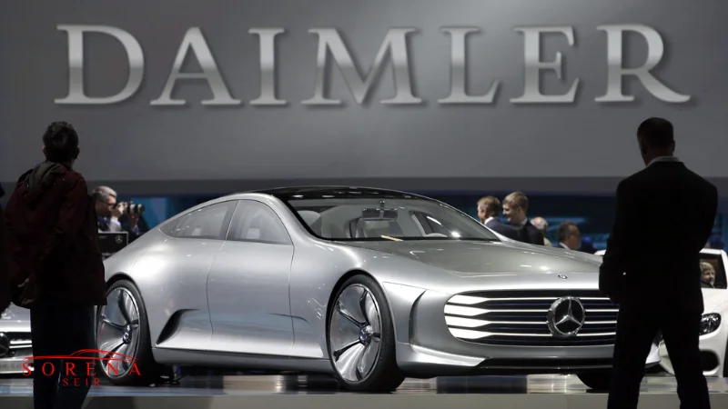

این شرکت که تحت نظر شرکت مرسدس بنز فعالیت میکند؛ یکی از بزرگترین تولیدکنندگان و تامینکنندگان برتر خودرو و وسایل نقلیه تجاری در سراسر جهان شناخته میشود. سابقه فعالیت دیملر به بیش از 130 سال پیش باز میگردد. دفتر مرکزی این کمپانی آلمانی در شهر اشتوتگارت واقع شده است. دیملر علاوه بر وسایل نقلیه سواری مرسدس بنز، یکی از برترین تولیدکنندگان کامیون و اتوبوس در جهان نیز به حساب میآید. این خودروساز تا کنون در حدود 130000 مدل خودروی هوشمند را در سراسر جهان فروخته است و به جهت کیفیت بالای تولیدات خود توانسته بیش از 4 سال رکورد افزایش فروش ماهانه را ثبت کند. علاوه بر این آمار درآمد حاصل از اجاره بنز نیز در کمپانیهای رنت خودرو بسیار بالاست. طبق آمارهای رسمی، درآمد سالانه این کمپانی حدود 174 میلیارد دلار است.
